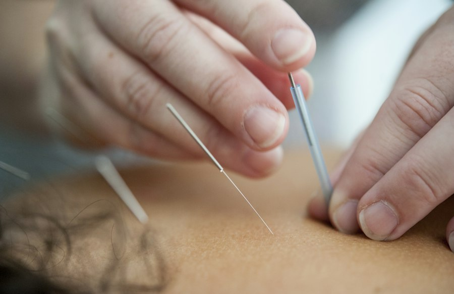
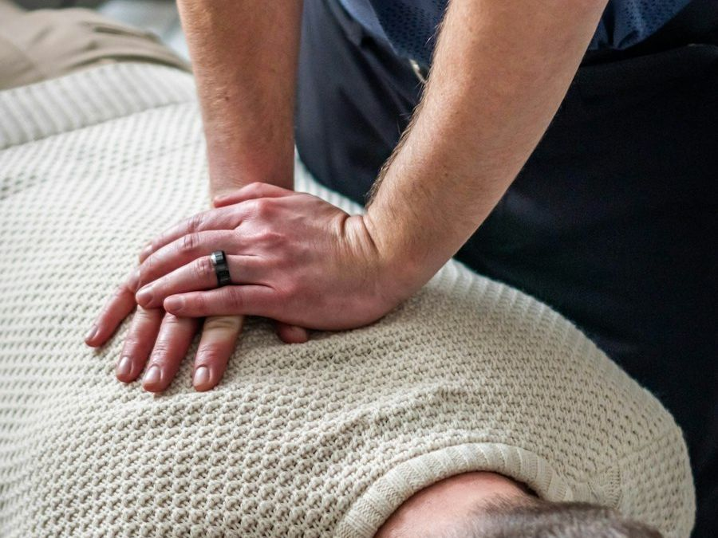
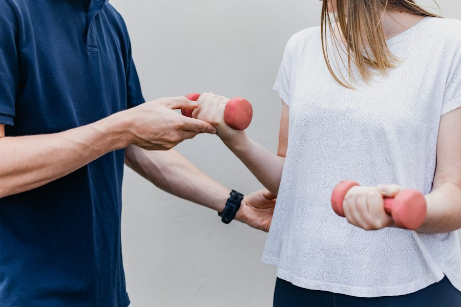

Conditions and treatments
If you're not sure whether physiotherapy is right for your problem, just ask. We'll talk it through before you book.
Arthritis and joint disease
Osteoarthritis, spondylosis, rheumatoid and other inflammatory joint conditions, in the back, neck and any joint.
Back and neck pain
Acute and long-standing pain, stiffness, and pain that spreads into the arms or legs.
Nerve pain
Nerve impingement, neuropathy and nerve damage: sharp or travelling pain, pins and needles, or reduced feeling.
Joint, muscle and soft tissue injuries
For example plantar fasciitis, ACL and cartilage injuries, sprains and strains.
Shoulder problems
Frozen shoulder, impingement and tendonitis.
Headaches
Headaches linked to the neck, posture and muscle tension.
Continence
Improving bladder control.
Neuro-rehabilitation
Rebuilding movement, balance and confidence after a stroke or other neurological injury.
Anxiety and sleep
Practical strategies to calm, self-soothe and sleep better, alongside your physical treatment.
Heart-health wellbeing
Support with activity and lifestyle to reduce cardiovascular risk.
Treatments I use

Acupuncture
Fine needles to ease pain and muscle tension, used alongside your other treatment.
Soft tissue mobilisation
Hands-on work on muscles, tendons and fascia to ease tightness, reduce pain and help you move more freely.

Joint mobilisation and manipulation
Gentle, controlled movement of stiff or painful joints, including manipulation where it's appropriate for you.

Exercise prescription
A programme of exercises and stretches made for you, to build strength and keep the problem from coming back.
Kinesiology taping
Stretchy tape applied to the skin to support muscles and joints, ease pain and swelling, and help you move normally while you heal.
Joint stabilisation
Targeted exercises to strengthen the muscles around a weak or unstable joint, so it feels secure and is less likely to give way.
Biomechanical re-education
Looking at how you move, stand and walk, and retraining those patterns to take strain off painful areas.
Pain management
Understanding your pain, preventing flare-ups, and practical ways to stay active and in control.
How treatment works
Treatment may include hands-on therapy, exercise and stretching programmes, advice on posture and daily activities, and pain-management strategies. You'll get exercises to start at home straight away, so you're in control of your recovery.
Book an assessment